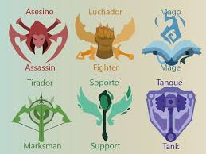

Roles y Campeones
Los campeones en League of Legends están clasificados en diferentes roles, cada uno con su propio conjunto de habilidades y estilo de juego. Los roles principales son:
- Tanque: Se encargan de absorber el daño y proteger a su equipo.
- Luchador: Mezcla de daño y resistencia, se especializan en combates cuerpo a cuerpo.
- Mago: Infligen daño mágico a distancia.
- Asesino: Especializados en eliminar rápidamente a enemigos vulnerables.
- Tirador: Infligen daño físico a distancia.
- Soporte: Proporcionan utilidad y apoyo a su equipo.
Jugabilidad
Una partida de League of Legends se desarrolla en un mapa llamado La Grieta del Invocador. Cada equipo de cinco jugadores comienza en su base y lucha para controlar el mapa, destruir las torres enemigas y finalmente el Nexo enemigo. Durante la partida, los campeones ganan oro y experiencia al derrotar a enemigos y objetivos, lo que les permite comprar objetos y mejorar sus habilidades.
Escena Competitiva
League of Legends tiene una próspera escena competitiva, con torneos organizados en todo el mundo. El evento más prestigioso es el Campeonato Mundial de League of Legends, donde los mejores equipos de cada región compiten por el título de campeón mundial.